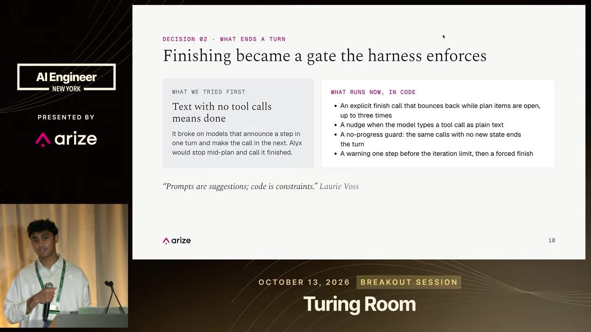
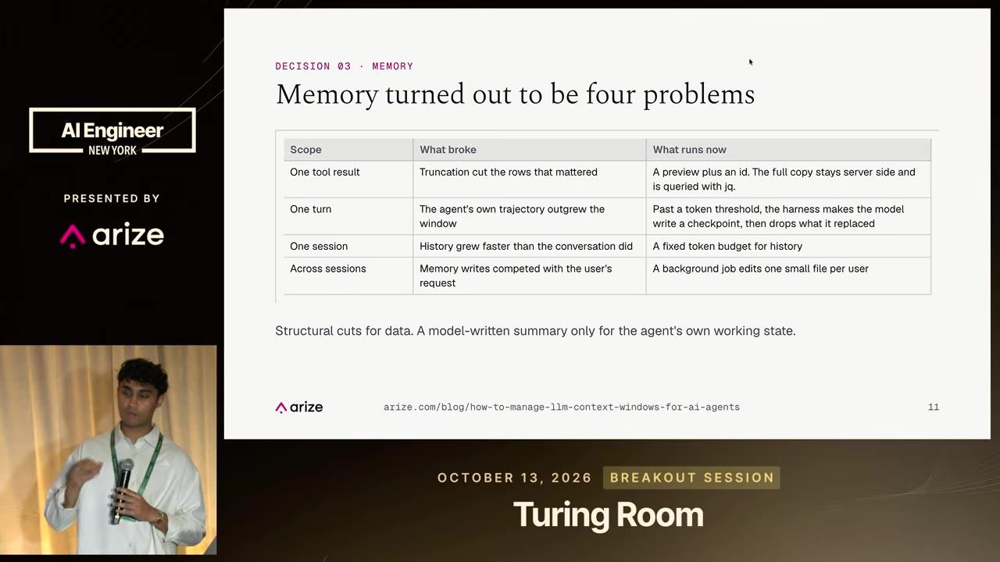
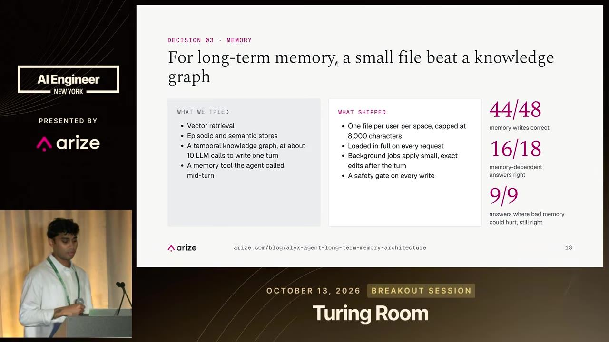
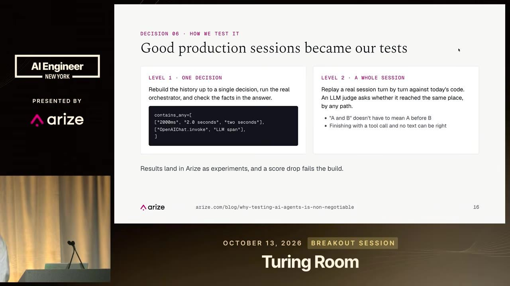

essencial do dia: Dois anos reconstruindo o agente Alex mostram quais decisões de harness sobreviveram e por quê.
O que sobreviveu a dois anos reconstruindo um agente
We Kept Rebuilding Our AI Agent. Here's What Survived
Quase tudo que sobreviveu a dois anos de reconstrução do agente Alex foi código do harness; framework e modelo novo pesaram pouco.
Depois deste talk você consegue escolher quais partes do harness de um agente merecem código próprio, como plano, regra de parada e memória
Em 3 frases
A Arize reconstruiu o Alex, agente embutido no produto, várias vezes entre 2023 e 2026, sem framework e sem treinar modelo. Todo o ganho veio de código próprio: loop, plano, regra de parada e memória.
As decisões que ficaram foram simples: o harness guarda o plano, o fim do turno é um portão explícito, resultados grandes viram arquivo, e um arquivo de 8.000 caracteres por usuário venceu grafo de conhecimento.
Sessões reais de produção viram casos de teste, e juízes automáticos precisam de gabarito humano. Velocidade contra qualidade continua sendo decisão de pessoa.
Antes de ler
- Harness estrutura que roda o agente analogia no glossário
- Memory pointer ponteiro de memória
- Compactação de contexto resumir o histórico para caber na janela do modelo analogia no glossário
- Sub-agent agente auxiliar criado por outro agente analogia no glossário
- Skills habilidade, julgamento institucional escrito para o agente executar analogia no glossário
- Model routing roteamento de modelos analogia no glossário
O plano passou a morar no harness
A primeira versão deu ao modelo uma ferramenta de lista de tarefas. Ele gastou chamadas só atualizando a lista e perdeu o foco após mais de 20 iterações. A equipe moveu o plano para o harness aos poucos e hoje testa sem a ferramenta de to-do, com o plano renderizado como mensagem a cada chamada.
 (ampliar imagem)
(ampliar imagem)
Terminar o turno vira um portão
Tratar texto sem chamada de ferramenta como 'terminei' quebrou em modelos que anunciam o passo num turno e chamam a ferramenta no próximo. Agora existe uma chamada explícita de finish. Se há itens do plano em aberto, o harness a devolve até três vezes, avisa um passo antes do limite de iterações e força o fim no limite.


(ampliar imagem)Resultado grande de ferramenta vira arquivo
Um JSON enorme de trace estoura a janela de contexto. O harness trunca o resultado e deixa o agente buscar o que precisa com código (jq). É a mesma ideia de deixar uma anotação na mesa apontando para o livro na estante. O histórico da própria sessão também é resumido num checkpoint com orçamento fixo de tokens.


(ampliar imagem)Mais 2 ideias deste talk
Um arquivo pequeno venceu o grafo de conhecimento
Testaram busca vetorial, memória episódica e semântica e grafos temporais. Ficaram com um markdown por usuário, limitado a 8.000 caracteres, carregado em toda requisição e escrito por um job em segundo plano ao fim da sessão. É exato, barato e um humano consegue auditar.


(ampliar imagem)Sessões de produção viram testes
O Alex é rastreado na própria plataforma da Arize. Consultas reais entram em datasets de regressão, e uma sessão inteira pode ser reexecutada turno a turno. Bugs de agente raramente aparecem como erro explícito, por isso a equipe usa o agente Signal para achar padrões como 43 chamadas idênticas no mesmo turno.


(ampliar imagem)O palestrante é product manager da Arize, e o Alex é vitrine da própria plataforma de observabilidade, então o talk também vende o produto. Não há medição que sustente as conclusões, como taxa de acerto antes e depois de cada reconstrução ou comparação entre memória em arquivo e grafo. A frase de 50% de alucinação é um comentário de um engenheiro. Os resultados valem como relato de um caso, não como prova geral.
Teste você mesmo
Responda de cabeça antes de abrir. Lembrar com esforço é o que fixa.
- lembrar Que problema apareceu quando o plano do agente era uma ferramenta de lista de tarefas que o próprio modelo atualizava?
Ver resposta
O modelo gastava chamadas só atualizando a lista e perdia o foco depois de mais de 20 iterações. Por isso o plano passou a morar no harness e a ser injetado como mensagem a cada chamada.
- aplicar No agente que você mantém ou imagina, como você decidiria quando um turno terminou?
Ver resposta
Com uma chamada explícita de finish, como no Alex. Se ainda houver itens abertos no plano, o harness recusa o encerramento (até três vezes), em vez de tratar texto sem ferramenta como 'terminei'.
- criticar Que limites da evidência você apontaria antes de copiar as decisões da Arize?
Ver resposta
O palestrante é da Arize e o Alex é vitrine da plataforma deles. Não há taxa de acerto antes e depois de cada reconstrução nem comparação entre memória em arquivo e grafo. Vale como relato de um caso, não como prova geral.
Plano no código e finish explícito
Você precisa de: Python, uma chave de API de modelo e um agente simples de poucas ferramentas
- Escreva um loop de agente com duas ou três ferramentas e uma lista de passos mantida em uma variável do seu código.
- Injete o plano atual como mensagem a cada chamada ao modelo, sem dar ao modelo uma ferramenta de to-do.
- Crie uma ferramenta finish que o harness recusa enquanto houver passos abertos, com limite de três recusas.
- Rode a mesma tarefa de cinco ou mais passos com e sem o finish explícito e anote quantas vezes o agente parou cedo.
Deu certo se: Você tem duas execuções lado a lado e consegue dizer em qual o agente completou todos os passos do plano.
O que fazer com isso
- Se seu agente usa lista de tarefas, teste manter o plano no código que chama o modelo e injetá-lo como mensagem, em vez de deixar o modelo atualizar a lista.
- Troque a regra 'texto sem ferramenta significa fim' por uma chamada explícita de finish que recuse o encerramento enquanto houver itens abertos.
- Antes de montar vetor ou grafo para memória, tente um arquivo de texto curto por usuário com limite de tamanho e revisão humana.
- Salve conversas reais com falha como casos de regressão e rode a cada troca de modelo ou de prompt.
Conversa com outros talks
- Transformar correções repetidas em lint rules · 9 out · em comum: Compactação de contexto, Skills, Subagente
- Workflows com código e modelo só onde há julgamento · 12 out · em comum: Golden dataset, Model routing, Skill
- Como a Optiver adota modelos novos no mesmo dia · 27 out · em comum: Golden dataset, Harness, Model routing